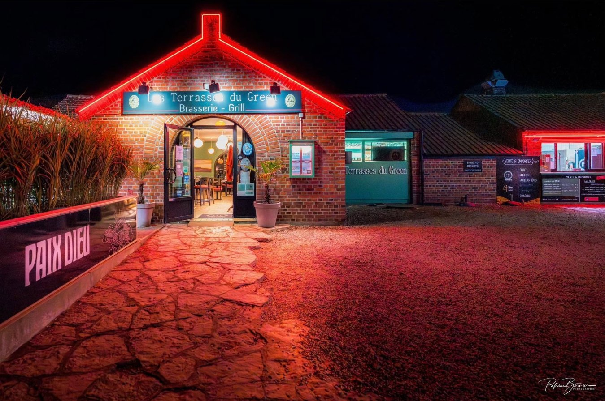
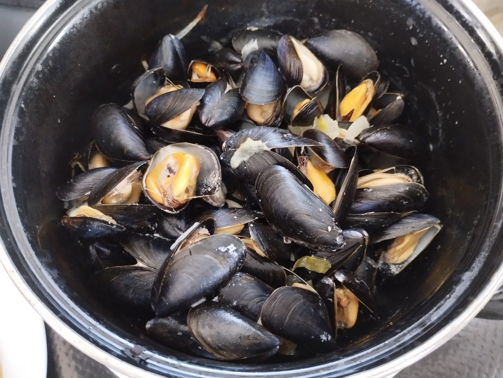
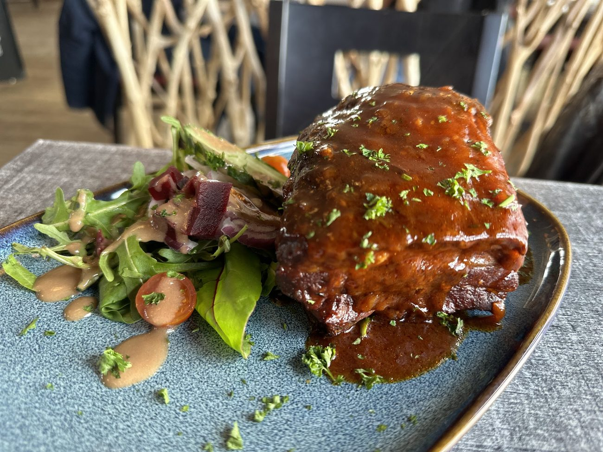
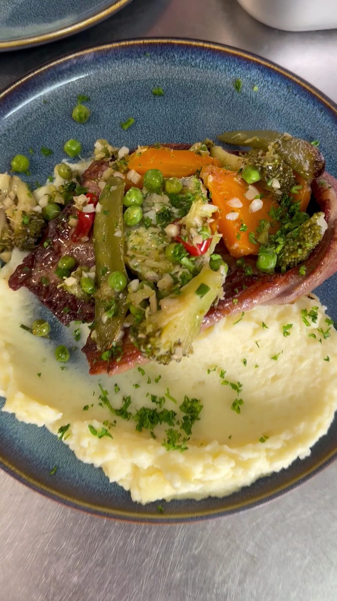

Photo : Patrice Bernier PhotographieBrasserie · Grill · Merlimont-Plage
Une cuisine de brasserie faite maison, avenue de la Plage à Merlimont. Sur place, en terrasse ou à emporter.
Elle est arrivée
L'hiver s'annonce gourmand : plats côté terre, côté mer, six recettes de moules et des desserts maison.




Au soleil ou au chaud
Les beaux jours, on s'installe dehors sur la terrasse plein sud. L'hiver, la salle et ses suspensions prennent le relais, côté bières comme côté vins.
Et toute l'année, des soirées à thème : suivez la page pour ne pas les manquer.
Vente à emporter
La carte friterie et les plats de la maison, à récupérer au comptoir.
Infos pratiques